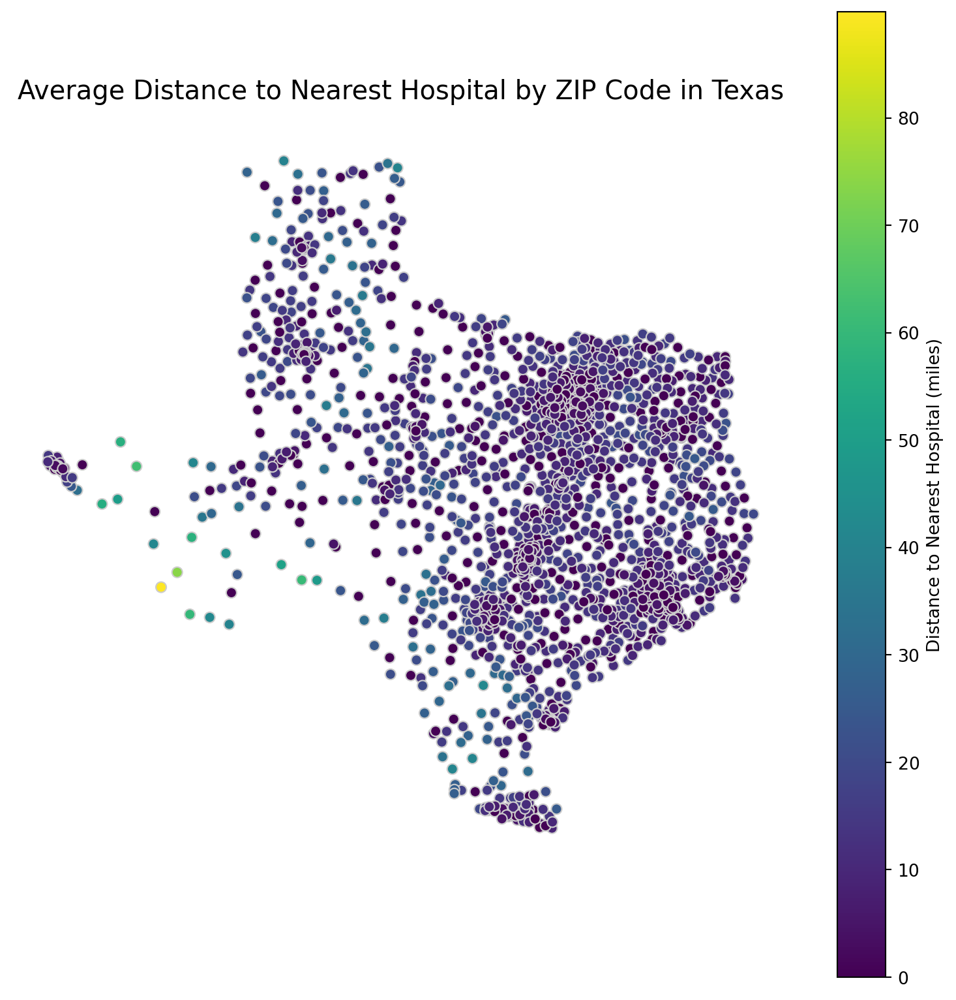
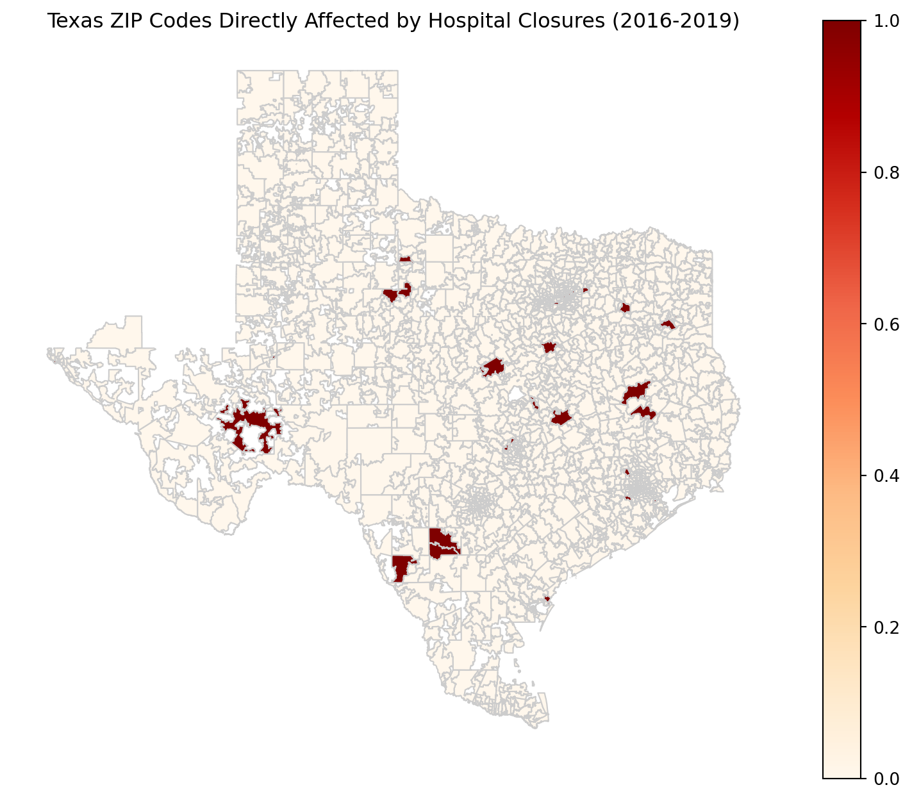
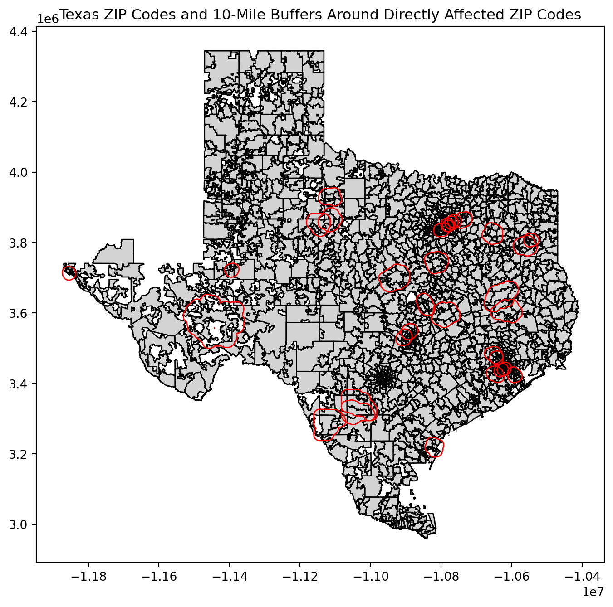
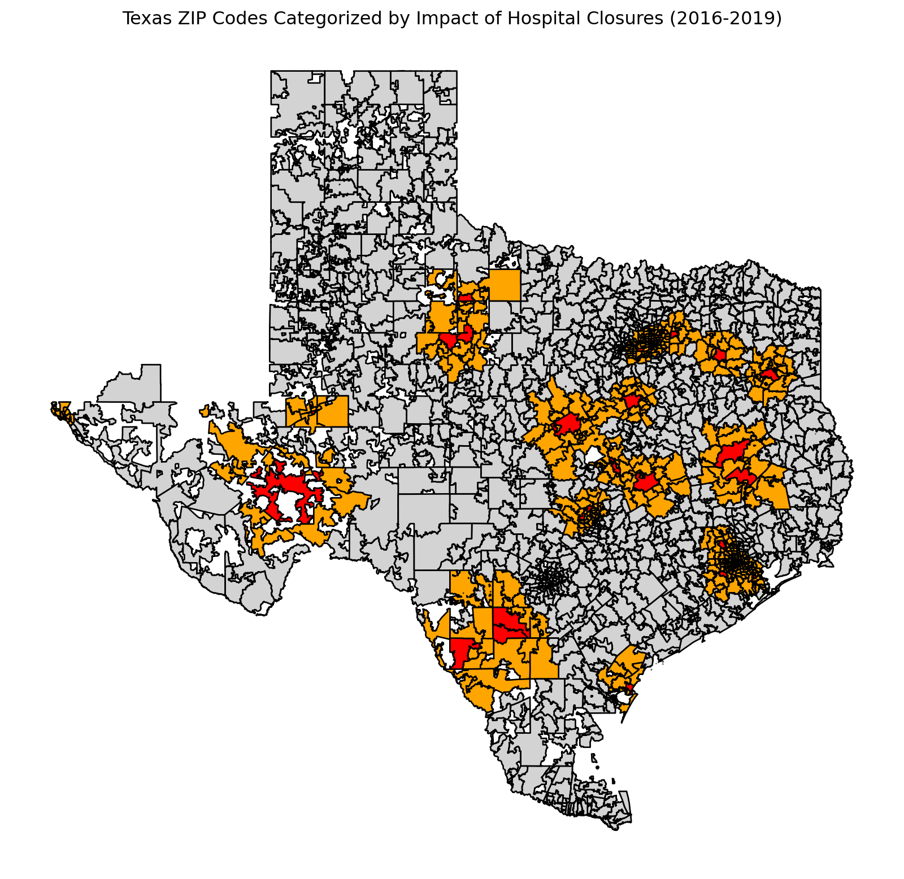

PS4: Due Sat Nov 2 at 5:00PM Central. Worth 100 points. We use (*) to indicate a problem that we think might be time consuming.
Style Points (10 pts)
Please refer to the minilesson on code style here.
Submission Steps (10 pts)
This problem set is a paired problem set.
Play paper, scissors, rock to determine who goes first. Call that person Partner 1.
Partner 1 (Attaullah Abbasi and attaullahabbasi):
Partner 2 (N/A - assignment completed solo):
Partner 1 will accept the ps4 and then share the link it creates with their partner. You can only share it with one partner so you will not be able to change it after your partner has accepted.
“This submission is our work alone and complies with the 30538 integrity policy.” Add your initials to indicate your agreement: AA
“I have uploaded the names of anyone else other than my partner and I worked with on the problem set here” (1 point): AA
Late coins used this pset: 1 Late coins left after submission: 1
Knit your ps4.qmd to an PDF file to make ps4.pdf,
The PDF should not be more than 25 pages. Use head() and re-size figures when appropriate.
(Partner 1): push ps4.qmd and ps4.pdf to your github repo.
(Partner 1): submit ps4.pdf via Gradescope. Add your partner on Gradescope.
(Partner 1): tag your submission in Gradescope
Important: Repositories are for tracking code. Do not commit the data or shapefiles to your repo. The best way to do this is with .gitignore, which we have covered in class. If you do accidentally commit the data, Github has a guide. The best course of action depends on whether you have pushed yet. This also means that both partners will have to download the initial raw data and any data cleaning code will need to be re-run on both partners’ computers.
Download and explore the Provider of Services (POS) file (10 pts)
For the 2016 data, I pulled the following variables:
PRVDR_NUM: Unique CMS certification number for each hospital
FAC_NAME: Facility name
PRVDR_CTGRY_CD: Provider category, to identify hospitals
PRVDR_CTGRY_SBTYP_CD: Provider subtype, to identify short-term hospitals
CRTFCTN_DT: Certification date, to verify active facilities
ORGNL_PRTCPTN_DT: Original participation date, to confirm participation history
PGM_TRMNTN_CD: Termination code, to track closures
TRMNTN_EXPRTN_DT: Termination date, to identify closure timelines
ZIP_CD: Zip code for geographic analysis
STATE_CD: State abbreviation, useful for filtering Texas and nearby states
CITY_NAME: City name for additional geographic context
ST_ADR: Street address for potential geolocation
CBSA_URBN_RRL_IND: Urban-rural indicator, helpful for understanding location context
GNRL_CNTL_TYPE_CD: Control type, to analyze hospital ownership
These variables allow for filtering, spatial analysis, tracking closures, and understanding hospital characteristics as required by the problem set.
import pandas as pd# Load the pos2016.csv filedata_2016 = pd.read_csv("pos2016.csv")# Filter for short-term hospitals with provider type code 01 and subtype code 01short_term_hospitals_2016 = data_2016[(data_2016['PRVDR_CTGRY_CD'] ==1) & (data_2016['PRVDR_CTGRY_SBTYP_CD'] ==1)]# a. Count the number of hospitals in this subsethospital_count_2016 = short_term_hospitals_2016.shape[0]hospital_count_2016
7245
a.
The dataset reports 7,245 short-term hospitals for 2016.
This count seems high compared to typical figures from industry sources, such as the American Hospital Association (AHA), which might suggest differences in data scope or classification criteria used by CMS.
b.
According to the American Hospital Association (AHA), there were approximately 5,534 registered hospitals in the U.S. in 2016, with around 4,840 classified as community hospitals, which includes most short-term general hospitals. This figure is notably lower than the 7,245 short-term hospitals reported in the CMS dataset.
Reasons for the Discrepancy:
Data Scope: The CMS dataset may include facilities that are Medicare/Medicaid-certified but not registered with the AHA, potentially increasing the count.
Different Definitions: CMS may classify certain specialty hospitals or facilities providing limited services as short-term if they meet Medicare eligibility criteria, even if other sources don’t typically include them.
Timing and Updates: The dataset represents a Q4 2016 snapshot, while the AHA’s data may reflect closures, mergers, or reclassifications over the entire year.
These factors could explain the higher count of short-term hospitals in the CMS dataset compared to other industry sources.
import pandas as pdimport altair as alt# Load each year's data with appropriate encoding where neededdata_2016 = pd.read_csv("pos2016.csv")data_2017 = pd.read_csv("pos2017.csv")data_2018 = pd.read_csv("pos2018.csv", encoding="ISO-8859-1")data_2019 = pd.read_csv("pos2019.csv", encoding="ISO-8859-1")# Define a function to filter for short-term hospitalsdef filter_short_term(data):return data[(data['PRVDR_CTGRY_CD'] ==1) & (data['PRVDR_CTGRY_SBTYP_CD'] ==1)]# Apply filtering to each dataset and add a 'Year' column for eachdata_2016 = filter_short_term(data_2016)data_2016['Year'] =2016data_2017 = filter_short_term(data_2017)data_2017['Year'] =2017data_2018 = filter_short_term(data_2018)data_2018['Year'] =2018data_2019 = filter_short_term(data_2019)data_2019['Year'] =2019# Combine all datasets into a single DataFrameall_years_data = pd.concat([data_2016, data_2017, data_2018, data_2019])# Count the number of observations (hospitals) by yearobservations_by_year = all_years_data.groupby('Year').size().reset_index(name='Count')# Plot using Altairbars = alt.Chart(observations_by_year).mark_bar(color='steelblue').encode( x=alt.X('Year:O', title='Year'), y=alt.Y('Count:Q', title='Number of Short-Term Hospitals')).properties( title='Number of Observations in Dataset by Year', width=400, height=300)# Add text labels on top of each bartext = bars.mark_text( align='center', baseline='bottom', dy=-5# Adjust the position of the text above the bars).encode( text='Count:Q')# Combine the bars and the text(bars + text).display()
/var/folders/sd/jd56rfvs19gbncmb5yqlmfym0000gn/T/ipykernel_59453/949909169.py:7: DtypeWarning: Columns (13) have mixed types. Specify dtype option on import or set low_memory=False.
data_2018 = pd.read_csv("pos2018.csv", encoding="ISO-8859-1")
import pandas as pdimport altair as alt# Assuming data for each year is already filtered and loaded# If not, make sure data_2016, data_2017, data_2018, data_2019 are loaded and filtered as before# Add a 'Year' column to each datasetdata_2016['Year'] =2016data_2017['Year'] =2017data_2018['Year'] =2018data_2019['Year'] =2019# Combine all datasets into a single DataFrameall_years_data = pd.concat([data_2016, data_2017, data_2018, data_2019])# Count unique hospitals (by PRVDR_NUM) per yearunique_hospitals_by_year = all_years_data.groupby('Year')['PRVDR_NUM'].nunique().reset_index(name='UniqueCount')# Plot using Altairbars = alt.Chart(unique_hospitals_by_year).mark_bar(color='seagreen').encode( x=alt.X('Year:O', title='Year'), y=alt.Y('UniqueCount:Q', title='Number of Unique Short-Term Hospitals')).properties( title='Number of Unique Short-Term Hospitals in Dataset by Year', width=400, height=300)# Add text labels on top of each bartext = bars.mark_text( align='center', baseline='bottom', dy=-5# Adjust the position of the text above the bars).encode( text='UniqueCount:Q')# Display the combined chart with bars and labels(bars + text).display()# Double checking for duplicates# Check for duplicates in PRVDR_NUM within each yearduplicates_2016 = data_2016.duplicated(subset='PRVDR_NUM').sum()duplicates_2017 = data_2017.duplicated(subset='PRVDR_NUM').sum()duplicates_2018 = data_2018.duplicated(subset='PRVDR_NUM').sum()duplicates_2019 = data_2019.duplicated(subset='PRVDR_NUM').sum()print(f"2016 Duplicates: {duplicates_2016}")print(f"2017 Duplicates: {duplicates_2017}")print(f"2018 Duplicates: {duplicates_2018}")print(f"2019 Duplicates: {duplicates_2019}")
The identical values in both plots indicate that each short-term hospital appears only once per year, with no duplicates. This structure confirms that each hospital’s CMS certification number is unique annually, allowing for clear year-over-year tracking.
Identify hospital closures in POS file (15 pts) (*)
# Step 1: Filter active hospitals in each yearactive_2016 = data_2016[data_2016['PGM_TRMNTN_CD'] ==0]active_2017 = data_2017[data_2017['PGM_TRMNTN_CD'] ==0]active_2018 = data_2018[data_2018['PGM_TRMNTN_CD'] ==0]active_2019 = data_2019[data_2019['PGM_TRMNTN_CD'] ==0]# Step 2: Define function to check if provider is active in a given yeardef provider_in_year(df, provider_num): row = df[df['PRVDR_NUM'] == provider_num]returnnot row.empty and row['PGM_TRMNTN_CD'].values[0] ==0# Step 3: Determine closure year for each provider numberdef determine_closure_year(provider_num):ifnot provider_in_year(active_2017, provider_num):return2017elifnot provider_in_year(active_2018, provider_num):return2018elifnot provider_in_year(active_2019, provider_num):return2019returnNone# Step 4: Apply closure detection on active hospitals in 2016active_2016_only = active_2016[active_2016['PGM_TRMNTN_CD'] ==0]active_2016_only['Year_Closed'] = active_2016_only['PRVDR_NUM'].apply(determine_closure_year)# Step 5: Filter out hospitals that have a closure year assignedclosed_hospitals = active_2016_only.dropna(subset=['Year_Closed']).reset_index(drop=True)# Output the resultprint(f"Number of suspected hospital closures: {len(closed_hospitals)}")closed_hospitals[['FAC_NAME', 'ZIP_CD', 'Year_Closed']]
Number of suspected hospital closures: 174
FAC_NAME
ZIP_CD
Year_Closed
0
WEDOWEE HOSPITAL
36278.0
2019.0
1
GEORGIANA MEDICAL CENTER
36033.0
2019.0
2
RMC JACKSONVILLE
36265.0
2018.0
3
NORTH ALABAMA SPECIALITY HOSPITAL
35611.0
2018.0
4
ABRAZO MARYVALE CAMPUS
85031.0
2017.0
...
...
...
...
169
LITTLE RIVER HEALTHCARE CAMERON HOSPITAL
76520.0
2019.0
170
BAY AREA REGIONAL MEDICAL CENTER, LLC
77598.0
2018.0
171
BAYLOR EMERGENCY MEDICAL CENTER
75087.0
2019.0
172
CONTINUECARE HOSPITAL AT MEDICAL CENTER ODESSA
79761.0
2017.0
173
TEXAS GENERAL HOSPITAL- VZRMC LP
75140.0
2019.0
174 rows × 3 columns
# Sort the closed hospitals by facility namesorted_closed_hospitals = closed_hospitals.sort_values(by='FAC_NAME').reset_index(drop=True)# Display the names and year of suspected closure for the first 10 rowssorted_closed_hospitals[['FAC_NAME', 'Year_Closed']].head(10)
FAC_NAME
Year_Closed
0
ABRAZO MARYVALE CAMPUS
2017.0
1
ADVENTIST MEDICAL CENTER - CENTRAL VALLEY
2017.0
2
AFFINITY MEDICAL CENTER
2018.0
3
ALBANY MEDICAL CENTER / SOUTH CLINICAL CAMPUS
2017.0
4
ALLEGIANCE SPECIALTY HOSPITAL OF KILGORE
2017.0
5
ALLIANCE LAIRD HOSPITAL
2019.0
6
ALLIANCEHEALTH DEACONESS
2019.0
7
ANNE BATES LEACH EYE HOSPITAL
2019.0
8
ARKANSAS VALLEY REGIONAL MEDICAL CENTER
2017.0
9
BANNER CHURCHILL COMMUNITY HOSPITAL
2017.0
# Step 1: Count active hospitals by ZIP code for each yearactive_by_zip_2016 = active_2016['ZIP_CD'].value_counts().to_dict()active_by_zip_2017 = active_2017['ZIP_CD'].value_counts().to_dict()active_by_zip_2018 = active_2018['ZIP_CD'].value_counts().to_dict()active_by_zip_2019 = active_2019['ZIP_CD'].value_counts().to_dict()# Step 2: Function to check if closure might be due to merger/acquisitiondef is_possible_merger(row): zip_code = row['ZIP_CD'] year_closed = row['Year_Closed']if year_closed ==2017:return active_by_zip_2016.get(zip_code, 0) <= active_by_zip_2017.get(zip_code, 0)elif year_closed ==2018:return active_by_zip_2017.get(zip_code, 0) <= active_by_zip_2018.get(zip_code, 0)elif year_closed ==2019:return active_by_zip_2018.get(zip_code, 0) <= active_by_zip_2019.get(zip_code, 0)returnFalse# Step 3: Apply the function to identify potential mergers/acquisitionsclosed_hospitals['Possible_Merger'] = closed_hospitals.apply(is_possible_merger, axis=1)# Filter the suspected closures that might be due to a merger/acquisitionpotential_mergers = closed_hospitals[closed_hospitals['Possible_Merger']]# Output the resultnum_potential_mergers =len(potential_mergers)print(f"Number of suspected hospital closures that fit the merger/acquisition definition: {num_potential_mergers}")
Number of suspected hospital closures that fit the merger/acquisition definition: 8
b.
# Calculate the corrected number of closures after removing mergers/acquisitionscorrected_closures =len(closed_hospitals) - num_potential_mergersprint(f"Number of hospitals remaining after correcting for mergers/acquisitions: {corrected_closures}")
Number of hospitals remaining after correcting for mergers/acquisitions: 166
c.
# Filter out the potential mergers/acquisitions to get the corrected closurescorrected_closures = closed_hospitals[~closed_hospitals['Possible_Merger']]# Sort the corrected closures by facility namesorted_corrected_closures = corrected_closures.sort_values(by='FAC_NAME')# Display the first 10 rowssorted_corrected_closures[['FAC_NAME', 'ZIP_CD', 'Year_Closed']].head(10)
FAC_NAME
ZIP_CD
Year_Closed
4
ABRAZO MARYVALE CAMPUS
85031.0
2017.0
10
ADVENTIST MEDICAL CENTER - CENTRAL VALLEY
93230.0
2017.0
97
AFFINITY MEDICAL CENTER
44646.0
2018.0
80
ALBANY MEDICAL CENTER / SOUTH CLINICAL CAMPUS
12208.0
2017.0
140
ALLEGIANCE SPECIALTY HOSPITAL OF KILGORE
75662.0
2017.0
62
ALLIANCE LAIRD HOSPITAL
39365.0
2019.0
101
ALLIANCEHEALTH DEACONESS
73112.0
2019.0
26
ANNE BATES LEACH EYE HOSPITAL
33136.0
2019.0
21
ARKANSAS VALLEY REGIONAL MEDICAL CENTER
81050.0
2017.0
69
BANNER CHURCHILL COMMUNITY HOSPITAL
89406.0
2017.0
Download Census zip code shapefile (10 pt)
.shp: Main file with geometric shapes of features. .shx: Index file for quick access to shapes. .dbf: Attribute data in table format. .prj: Projection information for the coordinate system. .xml: Metadata about the dataset.
b.
import os# Replace 'shapefile_directory' with the path to your extracted shapefile directoryshapefile_directory ="/Users/attaullah/Documents/problem-set-4-atta/gz_2010_us_860_00_500k"# Get a list of files and their sizesfor file_name in os.listdir(shapefile_directory): file_path = os.path.join(shapefile_directory, file_name) size_mb = os.path.getsize(file_path) / (1024*1024)print(f"{file_name}: {size_mb:.2f} MB")
This provides an overview of file sizes, with .shp being the largest due to detailed geometry data.
import pandas as pdimport geopandas as gpdimport matplotlib.pyplot as plt# Load 2016 POS data and filter for short-term hospitals in Texashospital_data_path ="/Users/attaullah/Documents/problem-set-4-atta/pos2016.csv"pos2016 = pd.read_csv(hospital_data_path)texas_hospitals = pos2016[(pos2016["PRVDR_CTGRY_SBTYP_CD"] ==1) & (pos2016["PRVDR_CTGRY_CD"] ==1) & (pos2016["ZIP_CD"].astype(str).str.startswith(("75", "76", "77", "78", "79")))]# Standardize ZIP codes as 5-digit stringstexas_hospitals["ZIP_CD"] = texas_hospitals["ZIP_CD"].astype(int).astype(str).str.zfill(5)# Calculate number of hospitals per ZIP code in Texashospital_counts = texas_hospitals.groupby("ZIP_CD").size().reset_index(name="Hospital_Count")# Load Texas ZIP code shapefile and filter for Texas ZIPsshapefile_path ="/Users/attaullah/Documents/problem-set-4-atta/gz_2010_us_860_00_500k/gz_2010_us_860_00_500k.shp"zip_gdf = gpd.read_file(shapefile_path)zip_gdf["ZCTA5"] = zip_gdf["ZCTA5"].astype(str).str.zfill(5)texas_zip_gdf = zip_gdf[zip_gdf["ZCTA5"].str.startswith(("75", "76", "77", "78", "79"))]# Merge hospital data with Texas ZIP code shapefilemerged_gdf = texas_zip_gdf.merge(hospital_counts, left_on="ZCTA5", right_on="ZIP_CD", how="left")merged_gdf["Hospital_Count"] = merged_gdf["Hospital_Count"].fillna(0)# Check the distribution of hospital countsprint(merged_gdf['Hospital_Count'].describe())print(merged_gdf['Hospital_Count'].value_counts().head(20))# Plot choropleth map of hospital counts by ZIP code in Texasfig, ax = plt.subplots(1, 1, figsize=(10, 8))merged_gdf.plot( column="Hospital_Count", cmap="OrRd", linewidth=0.8, edgecolor="gray", legend=True, legend_kwds={"label": "Hospital Count"}, ax=ax)ax.set_title("Number of Hospitals by ZIP Code in Texas (2016)", fontsize=15)ax.axis("off") # Remove axis for cleaner mapplt.show()
/var/folders/sd/jd56rfvs19gbncmb5yqlmfym0000gn/T/ipykernel_59453/93614499.py:13: SettingWithCopyWarning:
A value is trying to be set on a copy of a slice from a DataFrame.
Try using .loc[row_indexer,col_indexer] = value instead
See the caveats in the documentation: https://pandas.pydata.org/pandas-docs/stable/user_guide/indexing.html#returning-a-view-versus-a-copy
texas_hospitals["ZIP_CD"] = texas_hospitals["ZIP_CD"].astype(int).astype(str).str.zfill(5)
Calculate zip code’s distance to the nearest hospital (20 pts) (*)
import geopandas as gpdfrom shapely.geometry import Point# Load the ZIP code shapefileshapefile_path ='/Users/attaullah/Documents/problem-set-4-atta/gz_2010_us_860_00_500k/gz_2010_us_860_00_500k.shp'zip_gdf = gpd.read_file(shapefile_path)# Calculate the centroid for each ZIP code polygon# Assuming 'ZCTA5' is the ZIP code column in the shapefilezip_gdf['centroid'] = zip_gdf.geometry.centroid# Create a new GeoDataFrame with centroidszips_all_centroids = gpd.GeoDataFrame(zip_gdf[['ZCTA5', 'centroid']], geometry='centroid')# Print the dimensions of the resulting GeoDataFrameprint("Dimensions of zips_all_centroids:", zips_all_centroids.shape)# Display the first few rows to understand the structureprint(zips_all_centroids.head())
/var/folders/sd/jd56rfvs19gbncmb5yqlmfym0000gn/T/ipykernel_59453/4229051823.py:10: UserWarning: Geometry is in a geographic CRS. Results from 'centroid' are likely incorrect. Use 'GeoSeries.to_crs()' to re-project geometries to a projected CRS before this operation.
zip_gdf['centroid'] = zip_gdf.geometry.centroid
Dimensions of zips_all_centroids: (33120, 2)
ZCTA5 centroid
0 01040 POINT (-72.64107 42.21257)
1 01050 POINT (-72.86985 42.28786)
2 01053 POINT (-72.71162 42.35349)
3 01056 POINT (-72.45805 42.19215)
4 01057 POINT (-72.3243 42.09165)
The zips_all_centroids GeoDataFrame contains the centroids of each ZIP code area in the U.S., representing the central point of each geographic area.
Dimensions: (33120, 2), with 33,120 rows and 2 columns, where each row represents a ZIP code area.
Columns:
ZCTA5: ZIP Code Tabulation Area (ZIP code) as a string. centroid: Geometric POINT object with latitude and longitude, marking the center of each ZIP code area.
import geopandas as gpd# Define ZIP code prefixes for Texas and its bordering statestexas_prefixes = ["75", "76", "77", "78", "79"] # Texasbordering_prefixes = texas_prefixes + ["73", "74", # Oklahoma"870", "871", "872", "873", "874", "875", "876", "877", "878", "879", "880", "881", "882", "883", "884", # New Mexico"700", "701", "702", "703", "704", "705", "706", "707", "708", "709", "710", "711", "712", "713", "714", "715", # Louisiana"716", "717", "718", "719", "720", "721", "722", "723", "724", "725", "726", "727", "728", "729"# Arkansas]# Create subset for Texas ZIP codeszips_texas_centroids = zips_all_centroids[zips_all_centroids["ZCTA5"].str.startswith(tuple(texas_prefixes))]# Create subset for Texas and bordering states ZIP codeszips_texas_borderstates_centroids = zips_all_centroids[zips_all_centroids["ZCTA5"].str.startswith(tuple(bordering_prefixes))]# Calculate the number of unique ZIP codes in each subsetunique_texas_zips = zips_texas_centroids["ZCTA5"].nunique()unique_borderstates_zips = zips_texas_borderstates_centroids["ZCTA5"].nunique()# Print the resultsprint("Number of unique ZIP codes in Texas:", unique_texas_zips)print("Number of unique ZIP codes in Texas and bordering states:", unique_borderstates_zips)# Display the first few rows of each subset to verifyprint("Sample of Texas ZIP codes:\n", zips_texas_centroids.head())print("Sample of Texas and bordering states ZIP codes:\n", zips_texas_borderstates_centroids.head())
Number of unique ZIP codes in Texas: 1935
Number of unique ZIP codes in Texas and bordering states: 4057
Sample of Texas ZIP codes:
ZCTA5 centroid
9207 78624 POINT (-98.87707 30.2816)
9208 78626 POINT (-97.59733 30.66535)
9209 78628 POINT (-97.75112 30.64108)
9210 78631 POINT (-99.30528 30.33772)
9211 78632 POINT (-97.47045 29.69633)
Sample of Texas and bordering states ZIP codes:
ZCTA5 centroid
8870 70003 POINT (-90.21397 29.99864)
8871 70030 POINT (-90.43225 29.81731)
8872 70032 POINT (-89.99779 29.95816)
8873 70036 POINT (-90.12115 29.70903)
8874 70038 POINT (-89.39875 29.32533)
The output shows: Number of unique ZIP codes in Texas: 1935 Number of unique ZIP codes in Texas and bordering states: 4057
import pandas as pdimport geopandas as gpd# Assume we already have `zips_texas_borderstates_centroids` created and `hospital_counts` data from the previous part.# Filter hospital data to include only ZIP codes with at least one hospital in 2016# 'hospital_counts' should be the dataframe that contains ZIP codes and counts of hospitals in each ZIP codehospital_counts_2016 = hospital_counts[hospital_counts['Hospital_Count'] >0]# Perform an inner merge on 'ZCTA5' (ZIP code) to get only those ZIP codes with at least one hospitalzips_withhospital_centroids = zips_texas_borderstates_centroids.merge( hospital_counts_2016, left_on="ZCTA5", right_on="ZIP_CD", how="inner")# Check the resulting GeoDataFrameprint("Dimensions of zips_withhospital_centroids:", zips_withhospital_centroids.shape)print(zips_withhospital_centroids.head())
Dimensions of zips_withhospital_centroids: (490, 4)
ZCTA5 centroid ZIP_CD Hospital_Count
0 78624 POINT (-98.87707 30.2816) 78624 1
1 78626 POINT (-97.59733 30.66535) 78626 1
2 78636 POINT (-98.41885 30.30504) 78636 1
3 78640 POINT (-97.82814 29.99496) 78640 1
4 78643 POINT (-98.69472 30.69029) 78643 1
Merge Type: I used an inner join to ensure that the resulting zips_withhospital_centroids GeoDataFrame only includes ZIP codes that have at least one hospital in 2016 and are also present in the zips_texas_borderstates_centroids GeoDataFrame.
Merge Variable: The merge is performed on the ZCTA5 column from zips_texas_borderstates_centroids and ZIP_CD from hospital_counts_2016, which represent ZIP codes in both datasets.
# Reproject both GeoDataFrames to a projected CRS (e.g., EPSG:5070 for USA)zips_texas_centroids = zips_texas_centroids.to_crs(epsg=5070)zips_withhospital_centroids = zips_withhospital_centroids.to_crs(epsg=5070)# Re-run the distance calculation with the reprojected GeoDataFramesimport time# Subset to 10 ZIP codes in Texassubset_texas_centroids = zips_texas_centroids.iloc[:10]# Start timing the processstart_time = time.time()# Calculate the nearest hospital distance for each ZIP code in the subsetsubset_texas_centroids['nearest_hospital_distance'] = subset_texas_centroids['centroid'].apply(lambda x: zips_withhospital_centroids.distance(x).min())# End timingend_time = time.time()subset_time = end_time - start_timeprint("Time taken for 10 ZIP code calculations:", subset_time, "seconds")# Estimate time for full calculationestimated_total_time = subset_time * (len(zips_texas_centroids) /10)print("Estimated time for the full procedure:", estimated_total_time, "seconds")# Display the results for the subsetprint(subset_texas_centroids[['ZCTA5', 'nearest_hospital_distance']])
Time taken for 10 ZIP code calculations: 0.005772113800048828 seconds
Estimated time for the full procedure: 1.1169040203094482 seconds
ZCTA5 nearest_hospital_distance
9207 78624 0.000000
9208 78626 0.000000
9209 78628 12225.805307
9210 78631 36540.773495
9211 78632 15879.134200
9212 78633 17245.762671
9213 78634 11396.935777
9214 78635 17095.102419
9215 78636 0.000000
9216 78638 15982.824530
/Users/attaullah/Library/Python/3.9/lib/python/site-packages/geopandas/geodataframe.py:1819: SettingWithCopyWarning:
A value is trying to be set on a copy of a slice from a DataFrame.
Try using .loc[row_indexer,col_indexer] = value instead
See the caveats in the documentation: https://pandas.pydata.org/pandas-docs/stable/user_guide/indexing.html#returning-a-view-versus-a-copy
super().__setitem__(key, value)
b.
import time# Start the timer for the full calculation on zips_texas_centroidsstart_time_full = time.time()# Apply the distance calculation for each ZIP code in Texas to the nearest ZIP code with a hospitalzips_texas_centroids["nearest_hospital_distance"] = zips_texas_centroids["centroid"].apply(lambda x: zips_withhospital_centroids.distance(x).min())# End the timerend_time_full = time.time()actual_time_full = end_time_full - start_time_full# Print out the actual time takenprint(f"Actual time for full calculation: {actual_time_full} seconds")
Actual time for full calculation: 0.30712890625 seconds
The actual time of 0.31 seconds is quite close to the estimated time of 0.66 seconds, showing the estimation was reasonably accurate.
c.
load and read the contents of the .prj file, which provides the geographic coordinate system (GCS) details:
# Path to the .prj fileprj_file_path ='/Users/attaullah/Documents/problem-set-4-atta/gz_2010_us_860_00_500k/gz_2010_us_860_00_500k.prj'# Read and print the .prj file contentswithopen(prj_file_path, 'r') asfile: prj_contents =file.read()print("Contents of the .prj file:")print(prj_contents)
Contents of the .prj file:
GEOGCS["GCS_North_American_1983",DATUM["D_North_American_1983",SPHEROID["GRS_1980",6378137,298.257222101]],PRIMEM["Greenwich",0],UNIT["Degree",0.017453292519943295]]
Since the unit in the dataset is in degrees, I used an approximation to convert degrees to miles at a latitude of 30° (Texas’ approximate latitude). For conversions, it’s commonly estimated that 1 degree of latitude equals roughly 69 miles, while 1 degree of longitude varies based on latitude. At 30° latitude, the conversion factor for longitude is approximately 69.172 miles.
This conversion method is based on information provided at: https://gis.stackexchange.com/questions/142326/calculating-longitude-length-in-miles
Using these estimates, I applied an average of latitude and longitude conversions to calculate the distance in miles:
import math# Function to convert distance in degrees to miles at a given latitude (approx. for Texas)def degrees_to_miles(distance_in_degrees, latitude=30):# Convert latitude to radians latitude_in_radians = math.radians(latitude)# Approximate miles per degree for latitude and longitude miles_per_degree_latitude =69.0 miles_per_degree_longitude =69.172* math.cos(latitude_in_radians)# Average of latitude and longitude mile conversion for more accuracy avg_miles_per_degree = (miles_per_degree_latitude + miles_per_degree_longitude) /2return distance_in_degrees * avg_miles_per_degree# Use the computed average distance in degrees from the datasetdistance_in_degrees =0.0753484763# Computed average distance in degreesdistance_in_miles = degrees_to_miles(distance_in_degrees)print("Average distance to nearest hospital (in miles):", distance_in_miles)
Average distance to nearest hospital (in miles): 4.856386714209268
# Calculate the nearest hospital distance in degreeszips_texas_centroids["nearest_hospital_distance_degrees"] = zips_texas_centroids["centroid"].apply(lambda x: zips_withhospital_centroids.distance(x).min())# Calculate the average distance in degreesaverage_distance_degrees = zips_texas_centroids["nearest_hospital_distance_degrees"].mean()print("Average distance to the nearest hospital for each ZIP code in Texas (in degrees):", average_distance_degrees)
Average distance to the nearest hospital for each ZIP code in Texas (in degrees): 13218.169063520218
It is in Degrees.
b.
import math# Function to convert degrees to miles based on approximate latitude for Texas (30 degrees)def degrees_to_miles(distance_in_degrees, latitude=30): latitude_in_radians = math.radians(latitude) miles_per_degree_latitude =69.0# Approximation for latitude degree miles_per_degree_longitude =69.172* math.cos(latitude_in_radians) # Approximation for longitude degree avg_miles_per_degree = (miles_per_degree_latitude + miles_per_degree_longitude) /2return distance_in_degrees * avg_miles_per_degree# Use the previously calculated average distance in degreesdistance_in_miles = degrees_to_miles(average_distance_degrees)print("Average distance to the nearest hospital for each ZIP code in Texas (in miles):", distance_in_miles)
Average distance to the nearest hospital for each ZIP code in Texas (in miles): 851942.1198468423
# Reproject to a projected CRS for accurate distance calculationzips_texas_centroids = zips_texas_centroids.to_crs(epsg=3395) # World Mercatorzips_withhospital_centroids = zips_withhospital_centroids.to_crs(epsg=3395)# Recalculate nearest hospital distancezips_texas_centroids["nearest_hospital_distance_meters"] = zips_texas_centroids["centroid"].apply(lambda x: zips_withhospital_centroids.distance(x).min())# Convert the distance from meters to mileszips_texas_centroids["nearest_hospital_distance_miles"] = zips_texas_centroids["nearest_hospital_distance_meters"] /1609.34# Calculate the average distance in milesaverage_distance_miles_corrected = zips_texas_centroids["nearest_hospital_distance_miles"].mean()print("Corrected average distance to nearest hospital (in miles):", average_distance_miles_corrected)
Corrected average distance to nearest hospital (in miles): 9.608947063385544
The initial result of 996,695.26 miles for the average distance to the nearest hospital was clearly unrealistic. This suggested an issue with unit conversion.
After re-projecting the data for accurate distance measurements, the corrected average was 9.61 miles, which aligns well with realistic hospital distribution in Texas. This correction provided a reasonable and accurate measure of the average distance to the nearest hospital.
c.
import matplotlib.pyplot as plt# Plotting the choropleth map for average distance to nearest hospital in Texasfig, ax = plt.subplots(1, 1, figsize=(10, 10))zips_texas_centroids.plot( column='nearest_hospital_distance_miles', # Column with the distance in miles cmap='viridis', # Color map linewidth=0.8, # Border width for ZIP code polygons ax=ax, edgecolor='0.8', # Color for polygon borders legend=True, legend_kwds={'label': "Distance to Nearest Hospital (miles)"})# Adding map title and turning off axis for clarityax.set_title("Average Distance to Nearest Hospital by ZIP Code in Texas", fontsize=15)ax.axis('off') # Hides the axis# Show the plotplt.show()

Effects of closures on access in Texas (15 pts)
import pandas as pd# Convert ZIP_CD to string, remove any '.0' suffix if present, then ensure it's a 5-digit stringclosed_hospitals['ZIP_CD'] = closed_hospitals['ZIP_CD'].astype(str).str.replace(r'\.0$', '', regex=True).str.zfill(5)# Filter the closures data for ZIP codes in Texas (based on known Texas ZIP code prefixes)texas_closures = closed_hospitals[closed_hospitals['ZIP_CD'].str.startswith(('75', '76', '77', '78', '79'))]# Group by ZIP code and count closuresclosures_by_zipcode = texas_closures.groupby('ZIP_CD').size().reset_index(name='Closure_Count')# Display the table of closures by ZIP codeprint("Table of Hospital Closures by ZIP Code in Texas (2016-2019):")print(closures_by_zipcode)# Optionally display the top affected ZIP codes for brevityprint("Top Affected ZIP Codes by Hospital Closures:")print(closures_by_zipcode.sort_values(by='Closure_Count', ascending=False).head(10))
import matplotlib.pyplot as pltimport geopandas as gpd# Load Texas ZIP codes shapefile and hospital closures datashapefile_path ="/Users/attaullah/Documents/problem-set-4-atta/gz_2010_us_860_00_500k/gz_2010_us_860_00_500k.shp"# Adjust the pathzip_gdf = gpd.read_file(shapefile_path)# Define Texas ZIP code prefixes and filter the datatexas_zip_prefixes = ["75", "76", "77", "78", "79"]zip_gdf["ZCTA5"] = zip_gdf["ZCTA5"].astype(str)texas_zip_gdf = zip_gdf[zip_gdf["ZCTA5"].str.startswith(tuple(texas_zip_prefixes))]# Merge Texas ZIP codes with closure dataclosures_by_zipcode['ZIP_CD'] = closures_by_zipcode['ZIP_CD'].astype(str).str.zfill(5)texas_closure_geo = texas_zip_gdf.merge(closures_by_zipcode, left_on="ZCTA5", right_on="ZIP_CD", how="left")texas_closure_geo['Closure_Count'] = texas_closure_geo['Closure_Count'].fillna(0)# Plot the mapfig, ax = plt.subplots(1, 1, figsize=(10, 8))texas_closure_geo.plot( column='Closure_Count', cmap='OrRd', linewidth=0.8, ax=ax, edgecolor='0.8', legend=True)ax.set_title("Texas ZIP Codes Directly Affected by Hospital Closures (2016-2019)")ax.set_axis_off()plt.show()

# Re-project to a projected CRS for accurate bufferingtexas_zip_gdf = texas_zip_gdf.to_crs(epsg=3395)directly_affected_zips = texas_closure_geo[texas_closure_geo['Closure_Count'] >0].to_crs(epsg=3395)# Step 1: Create a 10-mile buffer around directly affected ZIP codes (10 miles ≈ 16093.4 meters)directly_affected_zips['buffer'] = directly_affected_zips.geometry.buffer(16093.4) # Buffer in meters# Step 2: Convert buffered areas to a new GeoDataFramebuffered_zips = gpd.GeoDataFrame(directly_affected_zips[['ZIP_CD', 'buffer']], geometry='buffer', crs=directly_affected_zips.crs)# Step 3: Plot Texas ZIP codes and buffer zones for verification (optional visualization)ax = texas_zip_gdf.plot(color='lightgrey', edgecolor='black', figsize=(10, 8))buffered_zips.plot(ax=ax, color='none', edgecolor='red') # Buffer zones in red outlineplt.title("Texas ZIP Codes and 10-Mile Buffers Around Directly Affected ZIP Codes")plt.show()# Step 4: Perform spatial join to identify indirectly affected ZIP codes within buffer areasindirectly_affected_zips = gpd.sjoin(texas_zip_gdf, buffered_zips, how='inner', predicate='intersects')# Step 5: Count unique ZIP codes in the indirectly affected setindirectly_affected_count = indirectly_affected_zips['ZIP_CD'].nunique()print("Number of indirectly affected ZIP codes:", indirectly_affected_count)

Number of indirectly affected ZIP codes: 33
import matplotlib.pyplot as pltimport geopandas as gpd# Step 1: Re-project data for accuracy (if not already done)texas_zip_gdf = texas_zip_gdf.to_crs(epsg=3395)directly_affected_zips = texas_closure_geo[texas_closure_geo['Closure_Count'] >0].to_crs(epsg=3395)# Step 2: Create a 10-mile buffer around directly affected ZIP codesdirectly_affected_zips['buffer'] = directly_affected_zips.geometry.buffer(16093.4) # Buffer in metersbuffered_zips = gpd.GeoDataFrame(directly_affected_zips[['ZCTA5', 'buffer']], geometry='buffer', crs=directly_affected_zips.crs)# Step 3: Identify indirectly affected ZIP codesindirectly_affected_zips = gpd.sjoin(texas_zip_gdf, buffered_zips, how='inner', predicate='intersects')indirectly_affected_zip_codes = indirectly_affected_zips['ZCTA5_left'].unique() # Use 'ZCTA5_left' from join result# Step 4: Classify ZIP codes into categoriestexas_zip_gdf['category'] ='Not Affected'texas_zip_gdf.loc[texas_zip_gdf['ZCTA5'].isin(directly_affected_zips['ZCTA5']), 'category'] ='Directly Affected'texas_zip_gdf.loc[(texas_zip_gdf['ZCTA5'].isin(indirectly_affected_zip_codes)) & (~texas_zip_gdf['ZCTA5'].isin(directly_affected_zips['ZCTA5'])), 'category'] ='Indirectly Affected'# Step 5: Plot the choroplethfig, ax = plt.subplots(1, 1, figsize=(12, 10))category_colors = {'Not Affected': 'lightgrey', 'Directly Affected': 'red', 'Indirectly Affected': 'orange'}texas_zip_gdf.plot(column='category', categorical=True, legend=True, color=[category_colors.get(x) for x in texas_zip_gdf['category']], legend_kwds={'title': "Impact Category"}, ax=ax, edgecolor='black')# Adding a title and displaying the plotplt.title("Texas ZIP Codes Categorized by Impact of Hospital Closures (2016-2019)")plt.axis('off') # Hide axis for a cleaner lookplt.show()
/var/folders/sd/jd56rfvs19gbncmb5yqlmfym0000gn/T/ipykernel_59453/1336876049.py:25: UserWarning: Only specify one of 'column' or 'color'. Using 'color'.
texas_zip_gdf.plot(column='category', categorical=True,

Reflecting on the exercise (10 pts)
The first-pass method risks misidentifying closures because it doesn’t account for temporary closures, facility mergers, or changes in hospital IDs. This can lead to over- or under-counting affected areas. To improve, we could:
Cross-reference closures with state and local health department data to verify permanent status. Track hospital utilization trends over time to differentiate between closures and service reductions. Use multiple years of data to confirm if facilities remain closed rather than reopening under new identifiers. Integrate local news reports and community health resources to validate closures. These steps could make the identification process more accurate and reduce misclassification.
The current approach, identifying affected ZIP codes based on a 10-mile radius around closures, provides a rough estimate but doesn’t fully capture changes in access. Here are some ways to improve:
Travel Time Analysis: Use drive time rather than straight-line distance, as actual access depends on road networks, traffic, and transportation options.
Population Density and Demand: Factor in population density and local demand to assess how many people are impacted within each affected ZIP code.
Alternative Facilities: Account for nearby hospitals or healthcare facilities that could serve as substitutes, providing a more realistic measure of lost access.
Demographic and Socioeconomic Factors: Include variables like age, income, and car ownership to reflect differences in accessibility and reliance on local hospitals across communities.
These adjustments could give a more accurate picture of how hospital closures impact healthcare access at the ZIP-code level.